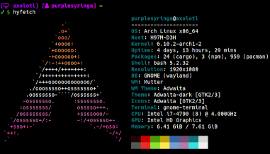
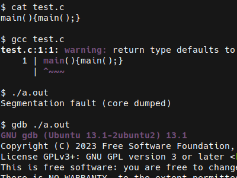

Hi! 👋 I'm Alisa Sireneva (she/her), a software developer and blogger from Moscow.
I specialize in performance optimization and systems programming. I also have experience with security, compression, and decentralized systems.
My primary goal as a writer is to teach the concepts I regularly apply through accessible content. You might recognize me from bangers like:
My blog is right here. If you know Russian, check out my Telegram channel as well.

I love listening to Badflower and LukHash.
My favorite book is Worm. My favorite modern-day author is qntm.
My favorite color is #8f1fff.
I still haven't completed Celeste.
I use a basic Arch setup because I don't like wasting time.
I'm nostalgic over the good old days I've never seen and love retrocomputing.

I'm familiar with:
See kitchen sink for more of my projects on these topics.